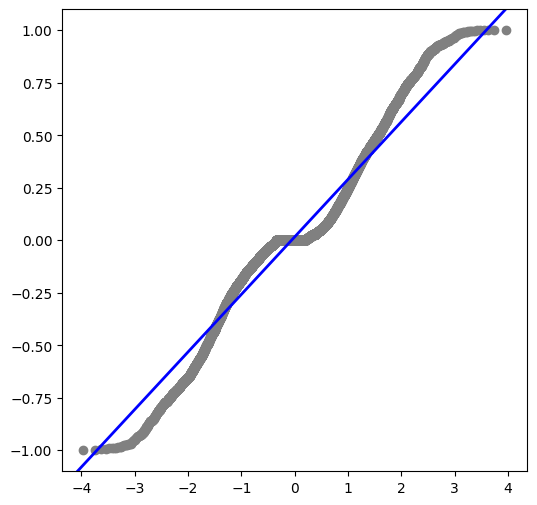
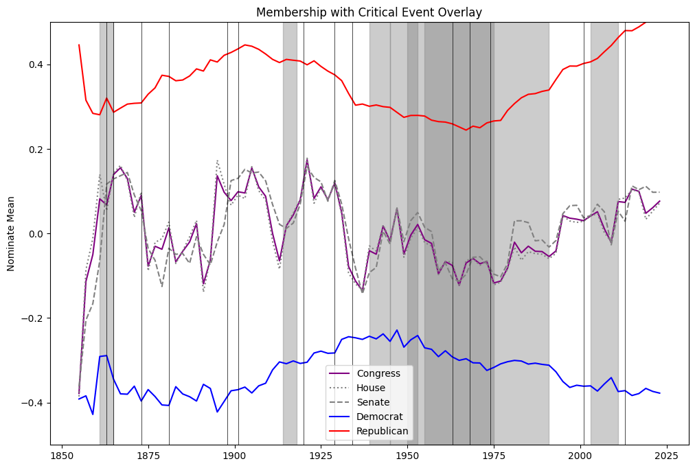
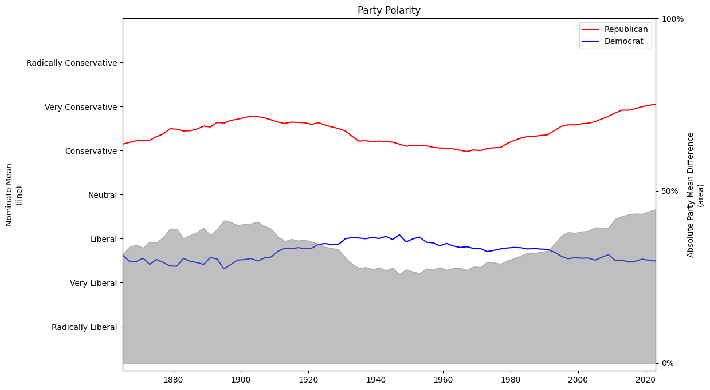

AJ Marcus
Copper Panda Consulting
2024-09-30
Politics has become a large societal concern in the United States and the polarizing stances on common issues has given way to social unrest, tension, and distrust. Utilizing Congressional Voting, Membership, and Ideology data from VoteView, this report validates and expands current reserach about the polarization of political opinion since the Democratic New Deal era of the 1960s. [1]
This report identified and validated the origin of polarization in line with expectations, along with the growing radicalization of Conservative right-wing Party memebrs.
Additionally, this report was able to determine each Congress Session acts independently of its siblings, with minor deviations under similar Presidental eras.
Data showed stability and structure, supporting potential advanced analysis and prediction models assuming additional data sources can be obtained to close weaknesses in the compilation and computation methods of the nominate mean scores.
Modern media has an endless supply of content showcasing the polarizing and radical political opinions of the country's two-party system. The younger Citizens and generations are feeling a compulsion to tribalism and segregation without the ability to counteract the historical negationism of our political composition prior to the 1970s.[2]
Millenials are the leading workforce generation and a significant voting body for the country. The last election in 2022 noted a significant voter turnout of Generation Z (Gen Z), once again changing the paradigm of American politics.
Millenials are familiar with our changing Government, having lived through several major events affecting our culture and lifestyle, including the 9/11 attacks, Black Lives matter movement, the Housing Financial Crash of 2008, and most recently, COVID-19. They also saw the aftermath of the Vietnam war and the fall of the Soviet Union through their parents. Milenials lived through the transition to our modern digital era, knowing a lifestyle before and after the integration of devices we now take as commonplace.
There is a sense of political tension that has become standard in our country; an us versus them mentality which is creating a self-fueled division in society. This report aims to identify this division as non-standard and thereby claim its existence is unacceptable and worth of purging from our communities.
This report aims to utilize public and professionally compiled records to determine the several conclusions as a standalone report, and as a baseline to allow future and further analysis on the topic.
The goals of this report are:
Confirm the existence of political polarization around the end of the American New Deal Era.
Determine if the polarization occurrs in isolation by Presidential Party or Congressional body.
Establish a baseline of reliable resources to potentially build voting delegate prediction models.
This report will analize data using established exploratory and statistical methods without making the assumption on any nown distribution or evolution of the data. Significance tests and visualizations will be utilized whenever possible and references to independent research or analysis will be incorporated to either support or challenge the findings of this report.
Data will be restricted to accredited sources produced from significant testing and validation of utility. Semantic data sources must be established and built upon the scientific method.
This report acknowledges the myriad existance of factors, both significant and inferred, beyond the scope any single analysis can ascertain; instead, we hope to build a foundation for expansion and insight.
The primary data source for this report will be extracted from VoteView as the predominant and expert collection of composition, votes, and actions of the US Congress. This source contains records historical to the first Congressional Congress and is actively updated for accuracy and current relevance. The source authors have established their own statistical metrics with a robust and vetted process suitable for the needs of this report.
VoteView provides multiple statistical dimensions for evaluation of liberal versus conservative dispositions, along with a more comprehensive multi-dimensional analysis.[3] We decided to exclude any analysis with the second dimension due to its history of academic challenge and pedigree of utility in predictive analytics over long time periods.[4]
Supplemental data setes, such as political event timelines and Presidential terms were collected from multiple public domain resources.
VoteView's data is event driven with known symmetrical bounds about the nominate statistic. This dimension has the potential to be normally distributed and will be treated as the known population, in lieu of a statistical strata or sample due to its record volume and exhaustive data lineage.
There are additional data elements available, such as Vote Result which may align with discrete distributions such as Bernouli, depending on the dimensionality available.
Predictive features may consider decay-based distributions given available time intervals, and this report should consider such models as Poisson for those analytical segments. Again, much like the primary assumptiions of the data, any analysis should treat the base models as representative of the Congressional population and not as a subset sample.
This report was successfull in meeting all its goals and was able to establish multiple key results. The dictated methodology provided a solid structure to evaluate within without a negative impact on outcomes.
This report concluded that voting histories from Congress were not normally distributed as a whole, nor as individual congressional bodies. Political Party is not relatable to any consistent distribution without binning along time variables; further formal analysis in this dimension is suspended because such binning is an arbitrary lexicon and beyond the immediate scope of this report.

quantile-quantile breakdown showing non-normality
Current political polarization notably began in 1969 which aligns with the end of the American New Deal era. There were several major political and sociological events impacting the US which have a strong correlation of effect to the timing of this change. The severe impact the Vietnam War had on the Citizens' trust in the Government and the exporting "welfare" economy were tangible drivers in ending the Democratic benefits and subsidies of the early 1960s.
Civil Rights movements took full swing and the US was a major global participant in activities beyond its borders, all driving tensions between the Party lines as distrust and Nationalism took hold. The 1970s would enhance this with fears of McCarthyism returning as a third Red Scare.[5]
Future analysis could provide a deep-dive comparison of factors affecting the polarization as they relate to specific events and timing of these various major national and global events.
This report identified large and disparate variances of Party and voting composition within each Congress Session. This variance strongly infers a notable independence from the Political Party baseline and each Session predicessor (or successor). The one visible caveat to this finding is the similarity of Congress Sessions to act in similar manner when under a single Presidence. This similarity is notable but not significant enough to suggest the President controls the Congressional bodies beneath him while in office.
Additional similarities of a lesser nature appeared when Presidents of the same Party and with similar dispositions had a sustaining effect of some (but not most) Congress Sessions.
This report suggests further analysis with tests akin to Mutual Information significancee to reinforce the finding of independence.[6]
Testing the independence of individual House and Senate votes provide no significant insight when using the Congress Session as a whole entity. This is an expected outcome as each side of Congress are forced to work in tandem to enact any laws or actions. Historically the House has been more Democratic with the Senate being majority Republican. These alignments have remained static since the 1870s and shows no sign of changing.

Nominate Mean timeseries showing Congress holds the House and Senate central to its movement
The nominate mean difference between each Political Party shows a curious trend not present since the 1910s; radicalization of right-wing conservative views. The distance, or spread, between the nominate means show a clear and present polarization of activity within Congress. However, noting the relatively calm deviation shown by the Democratic Party, the Conservative spectrum is steadily moving toward extremism and is presently the largest extreme in the history available.
Future reporting would benefit from following the trend to identify the turning point at which the Conservative race breaks and begins to return toward neutrality.
Additionally, collaborative reporting to dive into why the adoption of Conservative views has gained movement and popularity in contrast to the Democratic baseline, as the radicalism spectrums would not be present without the American body allowing the representation reflected in Congress.

Party disposition timeseries of mean distance
The data utilized in this report shows a robust and stable base of information which would be supportive of a predictive voting model for individual Congressional Members. However, the information contained in this data source are compiled ex post facto and would likely produce a weak model without supplementing some resource that does a preliminary analysis of political spectrum prior to the vote-execution.